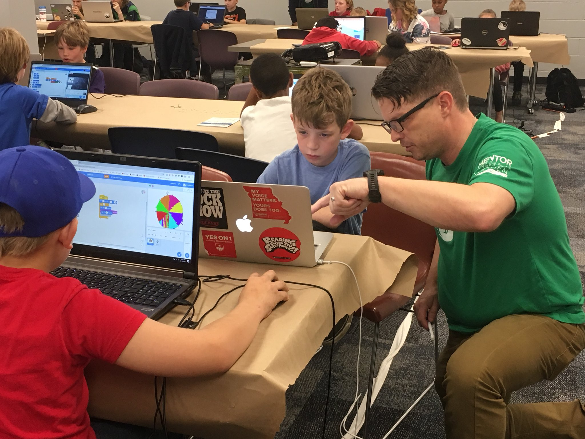

Chad Smith
I have solid knowledge of designing and developing full-stack web applications using various modern frameworks and technology stacks. In addition, I have 10 years experience as a GIS analyst, 6 years of SQL Database experience, and 4 years of small team leadership. My area of focus in GIS is spatial statistics and predictive analysis. I manage small teams in daily operations through planning, execution, reporting, and documentation.
Geographic Information Systems (GIS) are tools that assist with the analysis of spatial data. These are the tools which compliment and enable a geographer's ability to conduct complex analysis using large data-sets.

Solid foundation of designing and developing full-stack web applications using .NET framework.
- HTML 5, CSS 3, JavaScript, BootStrap 3
- C#, ASP.NET, MVC 5, LINQ
- SQL, MSSQLSS
- Developed multiple side-projects during training
- Coding in a team environment
ArcGIS for Server: Site Configuration and Administration Learned to plan, configure, deploy, and manage an ArcGIS for Server system, that enables GIS content sharing across enterprise systems.

Bachelor of Science in Geography. Minor in English Literature.
I focused on Urban Geography, Human Geography, and Data Modeling/Spatial Statistics. Recognized for excellence during UNT Scholar's Day 2008.
Supported the full software development lifecycle for multiple .Net microservices and core platform applications.
- React.js, Typescript, CSS, HTML5
- C#, ASP.Net, .Net Core, Microsoft SQL Server, Redis, SEQ, MongoDb
- Azure DevOps, Azure CLI, Docker, Git, CI/CD, Agile
- Unit Testing, XUnit
Supported the full software development lifecycle for multiple customer-facing applications in the Specialty Pharmacy area.
- Angular (v12), Typescript, RxJS, Bootstrap, CSS, HTML5
- C#, ASP.NET, .Net Core, Microsoft SQL Server
- Azure DevOps, Git, CI/CD, Agile
- Unit Testing, Jasmine, Karma
Supported multiple client applications using Adobe Experience Manager. Created components for authorable content. Applied internal and client-based style guidelines and coding standards. Collaborated with team members to gain new skills and impart knowledge based on personal experience.
- Adobe Experience Manager (v 6.5)
- Java 8 SDK
- Typescript / Javascript, CSS, HTML5
- Git, GitHub
- JetBrains IntelliJ software
Conveyed a complex technical curriculum to an audience of adult learners from a variety of backgrounds. Contributed to incremental changes and improvements of the program curriculum and provided individual feedback and guidance for students daily.
- React, Javascript, jQuery, HTML 5, and CSS
- Postgresql, T-SQL
- Node, Express, Passport
- Material-UI, Bootstrap
- C#, .Net Core
- Git, GitHub
Supported multiple portal applications for public-facing audiences. Developed unit testing and end-to-end (e2e) testing strategies for the front-end software. Wrote approximately 600 unit tests in four weeks to ensure an entire portal was unit tested before being released to production. Developed written best practices guidelines for unit testing and e2e testing based on research and organizational requirements.
- Angular (7, 8, 9, and 10), Typescript
- Jasmine, Karma, Protractor
- Postman API Tools
- C# (.Net Core)
- Microsoft Azure Functions, CosmoDb
- Microsoft Azure DevOps (ADO), Git
- Apigee API Management

Served as the Subject Matter Expert for all matters related to Human Intelligence Collection and Counter-Intelligence for the Division Commander (Major General Command). Served in a senior field grade officer position (executive / director-level) as a junior non-commissioned officer (junior manager / team leader).
- Coordinated the day-to-day operations, including planning, operational control, and reporting.
- Mentored subordinates and provided quality assurance for all products.
- Supported federal criminal investigations, with a narcotics nexus, through data-mining and research of individuals.
- Created maps, link analysis charts, event-timeline products, and written reports in support of criminal prosecutions.
- Used Cellebrite products to collect cell phone evidence.
- Certified Cellebrite Operator and Certified Cellebrite Analyst
- Supported multiple fiber optic construction projects and internal teams with GIS data management and analysis for the Telecommunications Division.
- Used SQL and data management skills to develop and manage large databases and geospatial data-sets.
- Created map web applications using ESRI's web API for ArcGIS Server.
- Introduced key efficiencies in data management by migrating data from stand-alone file systems to full SQL DB, reduced the opportunity for production errors and increased data sharing.
- Implemented and modified data schema for multiple new data-sets and integrated new data-sets with other key industry standard data schemas.
- Supported the Brigade Commander's Priority Intelligence Requirements through Military Source Operations and Strategic Debriefing.
- Led and mentored a 4-person team in daily operations to include: pre-mission planning, operations, reporting, record keeping, and leadership briefing.
- Communicated effectively with multiple non-Native English speakers from varying backgrounds and cultures.
- Successfully communicated using a translator for some non-English speaking audiences.


- Trained Research Managers for the Human Terrain System. Developed and taught GIS-based courses for adult learners using the ADDIE methodology.
- Successfully communicated very technical subject matter to non-technical audience of learners

- Provided client support for law enforcement mapping service.
- Created SQL translations from client's Records Management System schema to internal DB schema.
- Trained clients to use software and web-based products. Conducted training in person, via telephone or Skype, and through webcasts.
- Conducted advanced GIS analysis for selected clients.
- Coordinated research from 20+ teams for a military program based in Afghanistan.
- Created geospatial intelligence products from research materials. Coordinated requests for surveys between Social Science directorate and field teams.

- Created written reports for various Intelligence Preparation of the Battlefield products for SOCOM personnel.
- Conducted in-depth research and analysis of specific regions throughout the world.
- Created spatial data-sets for analysis by proprietary software tools.
- Served as patrol officer, bicycle officer, crime analyst, analyst detective, field training officer.
- Developed GIS methods to identify critical need areas for police services and track changes in those areas.
- Used SQL and data management skills to improve analysis capabilities.
- Improved data geocode matching rate from 68% match to over 99.999% for over 15 million records
 I read and
write French at a conversant or literate level. I speak French at an
elementary or conversational level. I learned French in adulthood. I
used the Memrise application to learn vocabulary and grammar rules. I
also subscribed to several YouTube channels to learn idiomatic French
and to become more comfortable with native speaker accents. I also
read (mostly) Le Monde to keep current on current events and expand my
vocabulary. I recently spent a week in Paris. I can proudly say that
my French was adequate to carry on most day-to-day activities, but was
sadly inadequate to file a police report (I was robbed.). C'est la
vie.
I read and
write French at a conversant or literate level. I speak French at an
elementary or conversational level. I learned French in adulthood. I
used the Memrise application to learn vocabulary and grammar rules. I
also subscribed to several YouTube channels to learn idiomatic French
and to become more comfortable with native speaker accents. I also
read (mostly) Le Monde to keep current on current events and expand my
vocabulary. I recently spent a week in Paris. I can proudly say that
my French was adequate to carry on most day-to-day activities, but was
sadly inadequate to file a police report (I was robbed.). C'est la
vie.
- Intermediate written French, Novice spoken French.
- Experience working with translators for day-to-day operations.
I mentored children from ages 8 to 16 in software development. Most of the kids were using Scratch, a visual IDE developed by MIT. Some advanced students were studying Javascript and C#. My role was to answer questions and help students discover the answer using their own skills.
